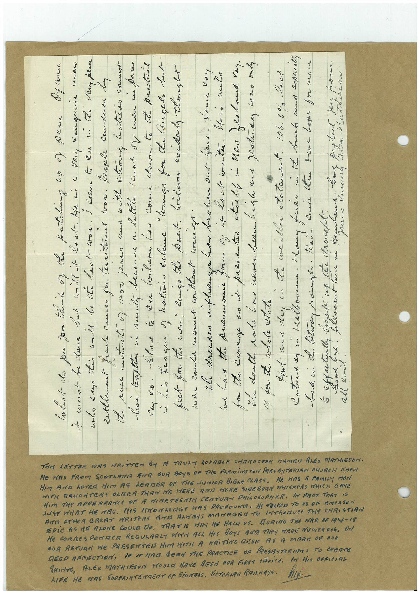

Book 1 · scan 157


Description
Transcription
Context
Review notes
Compare the machine draft with the scan. Handwriting and names need human review.
Artifacts
Edit the artifacts field in this note’s frontmatter to change these records. This summary is generated.
B01-S157-A01 — Letter & Handwritten note — Book 1, scan 157
Types: Letter, Handwritten note
Scope: Whole scanned page; individual items can be split out during review.
Caption: Not mapped yet.
Caption source: Not recorded yet.
Caption status: unmapped
Machine transcription
hIFE HE MAS SUDERINTENGENT OF SiGNERAS, ViCTORIAN RAILKAYS. SAINTS, ALEX MATHIRSON HOUR HAVE BEEN OUR FIRST CHOiCE. IN HIS OFFICIAL REEP ERECTION, 1E IT MAG BERM THE PRACTICE OF PRESBITeRIANS TO CREATE OUR RETURN We PRESENTER HIM WITH A KRiTiNG RESI AS A MARK DF OUR He CORReSPONDeR ReGULARLY WITH ALL HIS BOYS AND THeY MIERE NUmeROUs. ON EPIC AS HE ALONE COULE DO. THAT IS HINY HE HALT US. TAURING THe MAR OF 1914-18 JUST WHAT HE WAS. HIS IMMONAGe WAS PROFOUNE. He TALKeR TO US OF EmeRSON AND OTHER GREAT WRITERS ANTA ALMAYS MANAGER TO INTRODUCE THE CHRISTIAN HIM THe APDERRANCE OF A NIMETEENTA CENTURY PHiLOSOPMER. IN FACT TriAT IS HIM AND LOVE HIM AS LEADER OF THE JUNiOR BIBLE CLASS. WITH DAUGHTERS OLDER THAN WE WERE AMA MORE SIDEBURN HHISKERS WHICH GAYE He was a FAmiLy mAN HE WAS FROM SCOTAANI AND OUR BOYS OF THE FLEMiNGTON PRESBYTRRIAN CHURCH Krew THIS LETTER WAS WRITTEN BY A TRULY LOVABLE CHARACTER MAMEN ALES MATHIESON. Chat- do you for thunt of te pateling as ) Peace. Of conse i muot be da but will i last. He is a Very Kangune man who cao this will be de laal- was. keem to ku mi the ven peac settlement fast came for territonal war. Reople knuduer by the pace motto of 1000 fears and with choug hatress cannot lui letter ni anil, became a little Inot-or men in paris Ko. Slaa 6 ku lileon han come clawra to te practil his League ) kation echeme. "hungo for de Guşelı but feet for the men, cungo the poet. Wilon eviden tlought men coula want without weiss. the dresses influenza ba broken out- Giene. Kome kay Coe his the premonic for of it lact write. It-co mili for the conse as it presenter tall in new Zealand kay. I death nate has never been high and festerday cowo only gor de colole atale. bad i the Otra ranges. Rain kid ten Doe Lope for mon all evil.